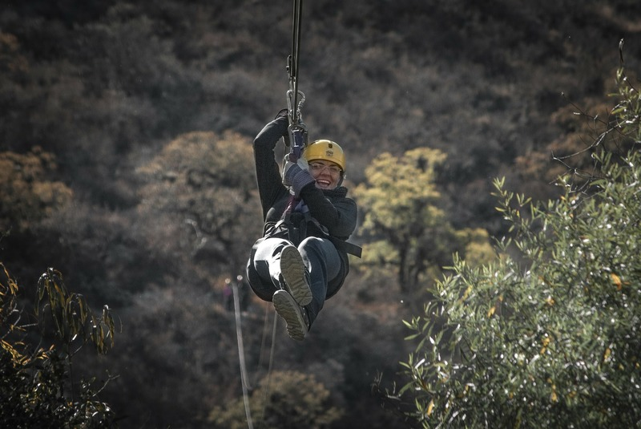

6 Tempat Outbound Lembang yang Cocok buat Outing Kantor
Outbound sering dipilih sebagai kegiatan untuk outing kantor. Selain asik buat dimainkan rame-rame, outbond juga bisa mempererat kerjasama tim, lho. Outbound Lembang jadi surganya buat cari tempat outbound yang luas. Ada banyak pilihan destinasi permainan yang bisa dipilih, selain itu jarak tempuhnya juga cukup dekat.
1. Trex Offroad CikoleMau ngerasain kegiatan yang agak ekstrem? Cobain aja offroad di Trex Offroad Cikole. Program offroad di sini biasanya disebut Offroad Amazing Race. Kamu bersama teman-teman akan diajak mengendarai mobil jeep di medan yang sulit. Merasakan jalanan yang penuh lumpur dan bergelombang di sepanjang Cikole. Kerjasama tim pasti sangat teruji. Selain offroad, Trex Offroad Cikole juga menyediakan program Jungle Trekking Amazing Race yang nggak kalah menantang.
2. Bahidit Rest Area OffroadAda lagi nih area outbound di Lembang yang cukup menantang, tempatnya di Bahidit Rest Area Offroad. Untuk sampai ke lokasi utama kamu harus mengendarai mobil offroad landrover, motocross, atau trekking. Meskipun medannya lumayan sulit, namun semuanya akan terbayar saat tiba di lokasi outbound.
Area outbound sangat asri karena berada di dalam hutan. Banyak pepohonan besar yang rindang. Meskipun berada di dalam hutan Cikole, kamu nggak perlu khawatir soal fasilitasnya. Bahidit Rest Area Offroad menjamin ketersediaan air, toilet, serta mushola yang terjaga kebersihannya.
Terletak di kaki gunung dengan area seluas 9 ha, Grafika Terminal Wisata Grafika Cikole punya udara yang sejuk. Hampir semua sudutnya ditumbuhi pohon pinus yang menjulang tinggi. Di sini kamu juga bisa mencoba banyak kegiatan outbound seperti flying fox, jembatan goyang, ATV, berkuda, jembatan tali, dan paintball. Terminal Wisata Grafika Cikole berlokasi di Jalan Raya Tangkuban Perahu km 8 Desa Cikole, Kecamatan Lembang, Kabupaten Bandung Barat.
4. Ciwangun Indah CampKalau tempat yang satu ini memang sudah terkenal sebagai tempat outbound training dan development. Lokasinya cukup jauh dari jalan raya sehingga cocok banget dijadikan tempat pelarian dari rutinitas kerja yang bikin stress. Areanya juga banyak ditumbuhi pepohonan sehingga kualitas udaranya sangat baik. Selain fasilitas outbound, kamu juga bisa bermain di Curug Tilu Leuwi Opat. Curug tersebut masih berada di Ciwangun Indah Camp jadi kamu nggak perlu jalan terlalu jauh.
5. Sindang Reret CikoleTempat outbound yang cukup populer lainnya yaitu Sindang Reret Cikole. Tempat ini cocok banget buat kamu yang mau nyobain outbound dalam kelompok kecil maupun besar. Ada beragam fasilitas seru yang bisa kamu coba seperti main high rope, ATV, paintball, atau berkunjung ke kids park, taman kelinci, dan peternakan ayam kate.
6. Zona 235 CikolePengen menguji kekompakan tim ala pasukan militer? Datang aja ke Zona 235 Cikole. Lokasinya berada di area hutan lindung mili Perhutani yang ditumbuhi banyak pepohonan. Di sini kamu bisa mencoba adegan tembak-tembakan seperti pasukan militer namun nggak pake senapan beneran. Kamu akan diberikan seragam loreng dan paintball. Selebihnya kamu tinggal atur strategi bersama tim untuk mengalahkan lawan. Kebayang kan gimana serunya?